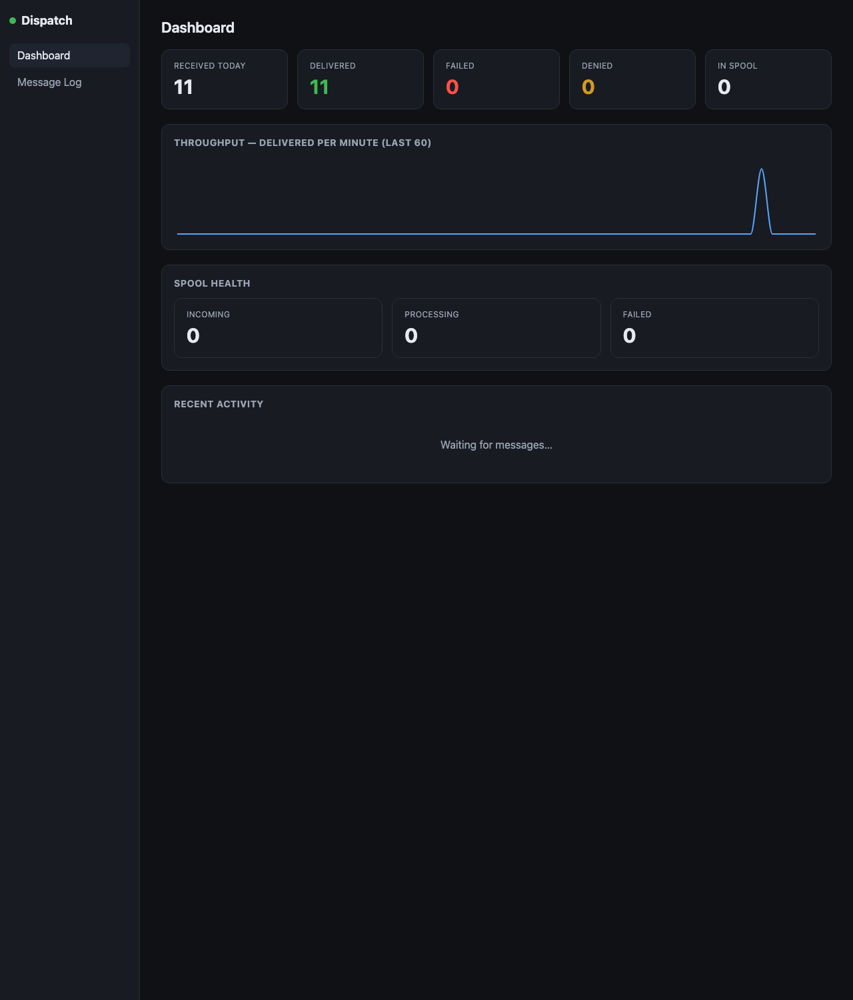

A self-hosted SMTP relay for your apps and devices. Point everything at Dispatch and it forwards mail to any provider — with a durable queue and a live dashboard.

Mailgun, SendGrid, Amazon SES, Postmark, Resend, SparkPost, SMTP2GO, Azure, or any SMTP smart host.
Accept mail over SMTP (25 / 587 / 2525) or a Mailgun-compatible HTTP API.
Instant 250 OK to a local queue — mail keeps flowing even if the database is down.
Counters, throughput, a searchable message log, and one-click provider testing.
Rotate a key once, not in every app — and watch every message in one log.
Windows & Linux installers, or a multi-arch Docker image. Your servers, your data.